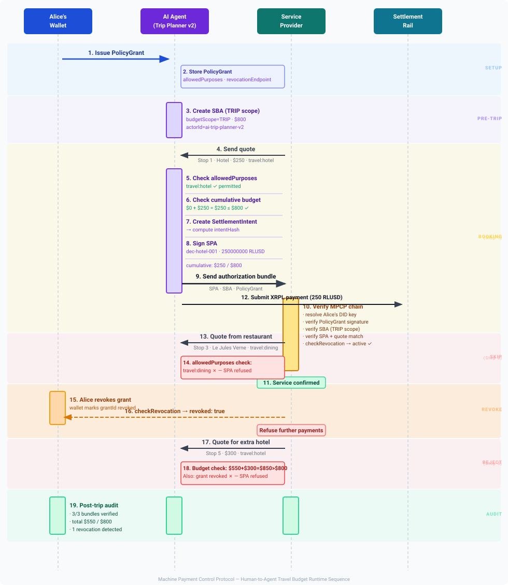

Human-to-Agent Travel Budget — MPCP Reference Flow
This document describes a complete end-to-end reference scenario for using the Machine Payment Control Protocol (MPCP) in a human-to-AI-agent delegation context.
Chain overview: Authorization Chain — the canonical visual diagram.
The goal is to illustrate:
- who the actors are
- which MPCP artifacts are issued
- when each artifact is created
- where artifacts are stored
- how verification occurs
- how the human principal retains control and can revoke mid-trip
This scenario is intended as a reference implementation narrative for developers, integrators, and auditors building human-to-agent payment delegation.
See also: Human-Agent Profile for the normative profile specification.
Scenario Overview
Alice is planning a 3-day trip to Paris (Apr 10–12 2026). Instead of manually booking each service, she delegates execution to an AI agent — but keeps strict control over what the agent is allowed to spend, where, and under which conditions.
Using MPCP, Alice does not give the agent access to her funds directly. Instead, she issues a cryptographically signed PolicyGrant that defines:
- total budget ($800)
- allowed spending categories (hotel, transport, flight)
- allowed payment rails and assets (XRPL / RLUSD)
- revocation controls
The AI agent operates under this policy and cannot exceed it.
This creates a constrained delegation model:
- Alice defines intent and limits
- the AI agent executes within those limits
- service providers independently verify that each payment is authorized
- the settlement rail executes only after verification
What This Scenario Demonstrates
This reference flow demonstrates the full MPCP lifecycle in a human-to-agent setting:
- how a human delegates authority without surrendering control
- how an AI agent enforces policy locally (not the merchant)
- how merchants verify authorization without trusting the agent
- how revocation works mid-flight
- how auditability is preserved end-to-end
Authorization Chain (Conceptual)
Alice (human principal)
│ signs PolicyGrant (TRIP scope, $800, allowed purposes, budgetMinor)
▼
Trust Gateway
│ enforces PA-signed budget ceiling, manages XRPL escrow
▼
AI Trip Planner v2
│ enforces allowedPurposes + checks revocation
│ signs SBA per booking (maxAmountMinor = this payment)
▼
Service Providers
│ verify PolicyGrant + SBA signatures (no trust in agent required)
▼
Settlement Rail (XRPL / RLUSD)
│ Trust Gateway submits XRPL Payment with mpcp/grant-id memo
Key property:
Every payment must be explainable as a valid derivation of Alice’s original signed intent.
Why This Matters
Without MPCP:
- agents need direct wallet access (high risk)
- merchants must trust the agent
- audit trails are weak or incomplete
With MPCP:
- authority is delegated but bounded
- verification is stateless and deterministic
- trust is replaced by cryptographic proof
This scenario shows how MPCP enables safe, auditable autonomy for AI-driven commerce.
Actors
See: Actors for a standalone overview.
Human Principal (Alice)
Alice is a human user who owns the payment budget and sets spending policy.
Responsibilities:
- defines the travel budget and constraints via a PolicyGrant
- signs the PolicyGrant with her DID key
- optionally anchors the policy to Hedera HCS for audit
- can revoke the delegation mid-trip via her wallet service's revocation endpoint
Alice's identity is expressed as a DID (did:key:..., did:xrpl:..., did:hedera:..., or any W3C-compatible DID method). The PolicyGrant issuer field contains her DID; her public key is used to verify all PolicyGrant signatures.
In this reference flow:
issuer: did:key:z6MkhaXgBZDvotDkL5257faiztiGiC2QtKLGpbnnEGta2doK
issuerKeyId: alice-did-key-1
Alice's wallet service hosts the revocation endpoint at:
https://wallet.alice.example.com/revoke
AI Agent (AI Trip Planner v2)
The AI agent acts as Alice's authorized payment delegate for the duration of the trip.
Responsibilities:
- enforces
allowedPurposes— refuses to sign SBAs for merchant categories not permitted in the PolicyGrant - checks revocation status before each payment
- issues a SignedBudgetAuthorization (SBA) per booking authorizing the specific amount and destination
- forwards approved SBAs to the Trust Gateway for XRPL settlement
The agent uses actorId as its identity in MPCP artifacts:
actorId: ai-trip-planner-v2
The agent holds one signing key:
- SBA key (
agent-sba-key-1) — signs each per-payment authorization
Service Providers
Service providers supply accommodation, transport, and other travel services.
In this scenario:
| Stop | Provider | Purpose | Amount |
|---|---|---|---|
| 1 | Mercure Paris (hotel) | travel:hotel | $250 |
| 2 | Eurostar (rail) | travel:flight | $120 |
| 3 | Le Jules Verne (restaurant) | travel:dining | — (skipped) |
| 4 | Europcar (car rental) | travel:transport | $180 |
| 5 | Hotel extra night | travel:hotel | $300 (rejected) |
Responsibilities:
- send a payment quote to the AI agent
- receive and verify the MPCP authorization bundle (PolicyGrant + SBA)
- optionally check revocation status at
revocationEndpoint - provide the service once verification passes; receive XRPL transaction hash as payment receipt
Settlement Rail
The settlement layer executes the payment.
In this scenario:
- Rail: XRPL
- Asset: RLUSD (IOU, 6 decimal places)
- Settlement model: per-service payment at time of booking confirmation
MPCP does not replace the settlement rail. It controls authorization above it.
MPCP Verifier
The verifier checks the full authorization chain.
In this scenario the verifier runs at the service provider's backend (or an MPCP-aware proxy). It checks:
- PolicyGrant signature (Alice's DID key or PA server domain key)
- SBA signature, TRIP scope, and payment constraints (
maxAmountMinor,destinationAllowlist)
Verification may also occur during post-trip auditing using the stored artifact bundles.
Key Concepts
TRIP Scope
The SBA budgetScope field is set to "TRIP", indicating the authorization covers a multi-day, multi-session delegation window. This contrasts with "SESSION" scope used in single-session flows (e.g., fleet EV charging).
Each per-payment SBA carries maxAmountMinor = this booking's amount only. Cumulative budget enforcement across all bookings is performed by the Trust Gateway, which tracks spend against the PA-signed budgetMinor on the PolicyGrant.
budgetScope: "TRIP"
maxAmountMinor: "25000" // this booking's amount in USD cents ($250.00)
allowedPurposes
The PolicyGrant includes an allowedPurposes field restricting which merchant categories the agent may pay:
"allowedPurposes": ["travel:hotel", "travel:flight", "travel:transport"]
The agent refuses to sign an SBA for any service whose purpose falls outside this list. In this scenario, Stop 3 (restaurant travel:dining) is silently refused — no SBA is created, no payment, no exception propagated to the provider.
This gives Alice fine-grained categorical control beyond just the total budget.
revocationEndpoint
The PolicyGrant includes a revocationEndpoint where any service provider or the agent itself can check whether Alice has cancelled the delegation:
revocationEndpoint: https://wallet.alice.example.com/revoke
The revocation check is online and performed at the service provider's discretion before confirming service. The MPCP verifier itself remains stateless — revocation is a separate application-layer check layered on top.
When checkRevocation(endpoint, grantId) returns { revoked: true }, service providers should refuse further payments against that grant.
High-Level Sequence Diagram
The following diagram summarizes the runtime interaction flow between Alice's wallet, the AI agent, service providers, and the settlement rail.

This diagram highlights the separation of roles:
- human principal (Alice) controls policy and revocation
- AI agent enforces allowedPurposes and cumulative budget
- service providers verify the authorization chain
- settlement rail executes payment
MPCP Artifacts Used in This Scenario
| Artifact | Issued By | Purpose |
|---|---|---|
| PolicyGrant | Alice (human principal, DID key or PA server) | Defines budget ceiling, allowed purposes, revocation endpoint, escrow ref |
| SignedBudgetAuthorization | AI Agent (SBA key) | Authorizes each individual service payment (amount + destination) |
| XRPL Payment + memo | Trust Gateway | Executes on-chain settlement; tagged with grantId for audit |
| Settlement Result | XRPL ledger | Confirms payment execution (transaction hash) |
These artifacts form the authorization chain: PolicyGrant → SBA → Trust Gateway → XRPL settlement.
Artifact Storage Matrix
| Artifact | Alice's Wallet | AI Agent | Trust Gateway | Service Provider | Settlement Rail |
|---|---|---|---|---|---|
| PolicyGrant | Authoritative copy | Operational copy | Operational copy | Received for verification | — |
| SBA | Optional audit | Signed per booking | Received + verified | Received in bundle | — |
| Settlement Result | Reconciliation | Stored receipt | Stored receipt | Stored receipt | Authoritative record |
Artifact Lifecycle
PolicyGrant
Issued by:
Alice (human principal, DID key)
Contains:
- allowed rails and assets
- spending scope (TRIP)
- total budget (via associated policy document / policyHash)
- allowed purposes (merchant category filter)
- revocation endpoint
- expiry time
Stored by:
- Alice's wallet (authoritative)
- AI agent (operational copy)
- service providers (received per authorization bundle)
The PolicyGrant is issued before the trip and covers the entire trip duration.
PolicyGrant Signature Model
A PolicyGrant is a signed JSON authorization artifact signed by Alice's DID key.
issuer: did:key:z6MkhaXgBZDvotDkL5257faiztiGiC2QtKLGpbnnEGta2doK
issuerKeyId: alice-did-key-1
Key resolution: service providers and verifiers resolve Alice's DID to retrieve her public verification key. For did:key DIDs, the key material is embedded in the DID itself. For other DID methods (did:xrpl, did:hedera, etc.), resolution follows the method-specific resolver defined by the W3C DID Core specification.
Example PolicyGrant structure:
{
"grantId": "pg-alice-paris-2026",
"policyHash": "a1b2c3d4e5f6",
"allowedRails": ["xrpl"],
"allowedAssets": [
{ "kind": "IOU", "currency": "RLUSD", "issuer": "rIssuer" }
],
"allowedPurposes": ["travel:hotel", "travel:flight", "travel:transport"],
"revocationEndpoint": "https://wallet.alice.example.com/revoke",
"expiresAt": "2026-04-13T00:00:00Z"
}
The issuer, issuerKeyId, and signature fields belong to the signed envelope that wraps the grant payload.
Policy Authority Server — Common Deployment Pattern
This reference flow shows Alice signing the PolicyGrant with her DID key directly. In practice, many deployments use a Policy Authority (PA) server — a backend service that issues grants on Alice's behalf.
In this model:
- Alice authenticates to her PA server (via session token, API key, or OAuth)
- The PA server issues the PolicyGrant, signing with a domain key (e.g.
wallet.alice.example.com) issueris the PA server's domain rather than Alice's personal DID- Key resolution uses HTTPS well-known:
https://wallet.alice.example.com/.well-known/mpcp-keys.json - The
revocationEndpointis also hosted by the PA server
issuer: wallet.alice.example.com
issuerKeyId: pa-grant-key-1
The MPCP artifact chain is identical — only the issuer value and key resolution method differ. This pattern is operationally simpler than requiring users to manage DID private keys and is the recommended starting point for most production deployments. The PA server also handles revocation, audit log storage, and grant lifecycle management centrally.
See: Integration Guide — Grant Issuer path for a step-by-step walkthrough of deploying the PA server and issuing grants.
Optional On-Chain Policy Anchoring
Alice may optionally anchor the policy document to Hedera Consensus Service at issuance time. This produces an anchorRef field on the PolicyGrant:
anchorRef: "hcs:0.0.12345:42"
The anchor provides a tamper-evident, timestamped record of the policy on a public ledger. Any third party can verify that the policy document was published before the trip began.
See: Policy Anchoring for details.
SignedBudgetAuthorization (TRIP scope)
Issued by:
AI Agent (SBA key)
A fresh SBA is issued per booking, authorizing the specific payment amount and destination. The budgetScope: "TRIP" indicates the delegation spans multiple days.
budgetScope: TRIP
maxAmountMinor: "25000" ($250.00 — this booking only)
sessionId: paris-trip-2026-alice
actorId: ai-trip-planner-v2
grantId: pg-alice-paris-2026
destinationAllowlist: [rHotelMercureParis]
Cumulative budget enforcement (across all trip bookings) is performed by the Trust Gateway, which tracks spend against the PA-signed budgetMinor.
Stored by:
- AI agent (per-booking, before submission to gateway)
- service provider authorization bundle
- Alice's audit log (optional)
Trust Gateway Settlement
The Trust Gateway receives the SBA from the agent, verifies the cumulative spend against the PA-signed budgetMinor, and submits the XRPL Payment transaction. The XRPL transaction hash (with mpcp/grant-id memo) is returned to the service provider as the payment receipt.
Settlement Result
Issued by:
Settlement Rail (XRPL)
Produced when the XRPL payment transaction executes.
Contains:
- transaction hash
- amount
- destination
- timestamp
End-to-End Trip Timeline
T-48h — Alice Issues PolicyGrant
Alice's wallet generates the delegation:
principal: Alice
did: did:key:z6MkhaXgBZDvotDkL5257faiztiGiC2QtKLGpbnnEGta2doK
budget: $800 TRIP scope
rail: XRPL / RLUSD
allowedPurposes: travel:hotel, travel:flight, travel:transport
revocationEndpoint: https://wallet.alice.example.com/revoke
expires: 2026-04-13T00:00:00Z
The PolicyGrant is signed with Alice's DID key and delivered to the AI agent.
Optionally: Alice's wallet anchors the policy document to HCS and stores the anchorRef in the grant.
T-1h — Agent Loads PolicyGrant
The AI agent receives the PolicyGrant from Alice's wallet (or PA server) and verifies the signature. The Trust Gateway has already created the XRPL budget escrow for budgetMinor XRP.
The agent is now ready to accept service quotes and issue per-payment SBAs.
Apr 10 — Stop 1: Hotel (Mercure Paris)
Provider sends quote
provider: Mercure Paris
purpose: travel:hotel
amount: $250.00
destination: rHotelMercureParis
quoteId: q-hotel-001
Agent validates
- purpose
travel:hotelis inallowedPurposes— permitted - destination
rHotelMercureParisis an approved recipient - revocation check:
{ revoked: false }→ grant active
Agent signs SBA
budgetScope: TRIP
maxAmountMinor: "25000" ($250.00)
destinationAllowlist: [rHotelMercureParis]
grantId: pg-alice-paris-2026
Provider verifies
- Resolves Alice's DID key (or HTTPS well-known)
- Verifies PolicyGrant signature
- Confirms
travel:hotelis inallowedPurposes - Verifies SBA signature and
maxAmountMinorcovers the quote
Service confirmed. Agent forwards SBA to Trust Gateway → Trust Gateway submits XRPL Payment → provider receives tx hash.
Cumulative: $250 / $800
Apr 11 — Stop 2: Eurostar Tickets
Provider sends quote
provider: Eurostar
purpose: travel:flight
amount: $120.00
destination: rEurostar
quoteId: q-train-001
Agent validates
- purpose
travel:flightis inallowedPurposes— permitted - destination
rEurostaris an approved recipient - revocation check:
{ revoked: false }→ grant active
Agent signs SBA
budgetScope: TRIP
maxAmountMinor: "12000" ($120.00)
destinationAllowlist: [rEurostar]
grantId: pg-alice-paris-2026
Provider verifies and confirms
PolicyGrant + SBA signatures verified. Trust Gateway submits XRPL Payment. Provider receives tx hash.
Cumulative: $370 / $800
Apr 11 (mid-trip) — Alice Revokes
Alice decides to cancel the remainder of the delegation.
Her wallet service marks the grant as revoked:
grantId: pg-alice-paris-2026
revokedAt: 2026-04-11T18:30:00Z
The revocation endpoint at https://wallet.alice.example.com/revoke now returns:
{ "revoked": true, "revokedAt": "2026-04-11T18:30:00Z" }
Any subsequent checkRevocation(endpoint, grantId) call returns { revoked: true }.
Apr 12 — Stop 4: Car Rental (Europcar)
The car rental booking was made before Alice revoked. The agent had signed the SBA and the Trust Gateway had already submitted the XRPL payment before revocation took effect. The settlement is complete.
Note: In implementations that check revocation at Trust Gateway submission time (not just at authorization time), a pending (not yet submitted) payment would be blocked. This reference flow assumes the Trust Gateway submitted payment before the revocation timestamp.
provider: Europcar Paris
purpose: travel:transport
amount: $180.00
destination: rEuropcarParis
Settlement executes. Cumulative: $550 / $800
Apr 12 — Stop 5: Extra Hotel Night — REJECTED
The agent attempts to book an additional hotel night ($300) but checks revocation first:
checkRevocation() → { revoked: true }
The agent refuses to sign the SBA. No payment request reaches the Trust Gateway. Even without revocation, the Trust Gateway would reject a payment that would push cumulative spend past budgetMinor ($800).
Post-Trip Audit
All three settled bundles (hotel, Eurostar, car rental) can be independently verified after the trip using the stored artifact bundles.
Each bundle contains:
- PolicyGrant (Alice's signed delegation)
- SBA (per-booking authorization)
- XRPL transaction hash (settlement receipt, including
mpcp/grant-idmemo)
Any auditor with Alice's public key can reconstruct and verify the full authorization chain.
Data Storage Model
Alice's Wallet
- PolicyGrant (authoritative)
- revocation state
- optional: trip audit log
AI Agent Stores
- active PolicyGrant
- per-booking SBAs (before and after gateway submission)
- settlement receipts (XRPL transaction hashes returned by Trust Gateway)
Service Provider Stores
- payment quote
- received authorization bundle (PolicyGrant + SBA)
- verification result
- settlement reference
- booking record
Verification Points
Key Resolution and Trust Model
Service providers verify the PolicyGrant signature using Alice's DID public key.
For did:key DIDs, the public key is derived directly from the DID string — no network call required.
For other DID methods (did:xrpl, did:hedera, etc.), the verifier uses the method-specific resolver to retrieve the DID Document and extract the verificationMethod[].publicKeyJwk. See Key Resolution for the did:xrpl example and W3C DID Core for the standard.
issuerKeyId (Alice's DID)
↓
DID resolver (did:key — inline; other methods — method-specific resolver)
↓
public verification key
↓
verify PolicyGrant signature
Agent Verification (before issuing SBA)
Before signing each SBA, the agent checks:
allowedPurposescontains the service purpose- destination is a known and expected recipient
- settlement rail and asset are allowed
- PolicyGrant is not expired
- revocation status via
revocationEndpoint
Service Provider Verification
Before confirming service:
- resolve Alice's DID key (or HTTPS well-known) and verify PolicyGrant signature
- PolicyGrant not expired;
allowedPurposesincludes the requested category - SBA signature valid;
maxAmountMinorcovers the quoted amount;destinationAllowlistincludes the provider's address - check
revocationEndpoint(optional but recommended)
Post-Trip Audit Verification
After trip:
- each bundle independently verifiable
- XRPL transaction amounts match SBA
maxAmountMinoramounts - cumulative spend within PA-signed
budgetMinor(verifiable via on-chain escrow +mpcp/grant-idmemo sum) - no SBAs signed for the grant after revocation timestamp
Failure Scenarios
Purpose Not Allowed
Agent refuses to issue SBA. Service provider receives no authorization. No payment.
Budget Exceeded
Trust Gateway tracks cumulative spend. If cumulative + amount > budgetMinor, the gateway rejects the SBA. No XRPL payment is submitted. The on-chain escrow provides a tamper-proof upper bound — the gateway cannot overspend regardless of agent behavior.
Grant Revoked
checkRevocation() returns { revoked: true }. Agent refuses to sign further SBAs. The Trust Gateway also rejects any SBA against a revoked grant and releases the escrow.
PolicyGrant Expired
Service provider rejects authorization (expired grant). Agent should not issue new SBAs against an expired grant. Trust Gateway rejects expired grants and releases the XRPL escrow via EscrowCancel.
Destination Not on Allowlist
Agent refuses to sign SBA for an unlisted destination. Even if signed, the Trust Gateway verifies the SBA destinationAllowlist before submitting the XRPL payment.
Signature Verification Failure
DID resolution fails or PolicyGrant/SBA signature is invalid. Service provider rejects the bundle. Trust Gateway also rejects SBAs with invalid signatures.
Audit Bundle
For audit or dispute resolution, the following bundle may be stored per service booking:
- PolicyGrant (Alice's signed delegation)
- SBA (booking-specific authorization)
- Payment quote metadata
- Settlement receipt (XRPL transaction hash with
mpcp/grant-idmemo) - Optional: revocation check result at time of authorization
- Optional:
anchorRef(HCS policy anchor, if Alice published the policy on-chain)
This bundle allows full replay of the authorization chain from Alice's delegation to on-chain settlement.
Full Artifact Bundle Example
The following example shows the self-contained authorization bundle for Stop 1 (Hotel Mercure Paris).
This illustrates the TRIP-scoped delegation chain: Alice → AI Agent → Trust Gateway → Hotel → XRPL settlement.
SBA amounts are in USD cents. XRPL on-chain amounts are in RLUSD atomic units (6 decimal places).
{
"policyGrant": {
"grantId": "pg-alice-paris-2026",
"policyHash": "a1b2c3d4e5f6",
"allowedRails": ["xrpl"],
"allowedAssets": [
{ "kind": "IOU", "currency": "RLUSD", "issuer": "rIssuer" }
],
"allowedPurposes": ["travel:hotel", "travel:flight", "travel:transport"],
"revocationEndpoint": "https://wallet.alice.example.com/revoke",
"budgetMinor": 80000,
"budgetEscrowRef": "xrpl:escrow:rGateway...:87654321",
"authorizedGateway": "rGateway...",
"offlineMaxSinglePayment": 5000,
"expiresAt": "2026-04-13T00:00:00Z",
"issuer": "did:key:z6MkhaXgBZDvotDkL5257faiztiGiC2QtKLGpbnnEGta2doK",
"issuerKeyId": "alice-did-key-1",
"signature": "base64encodedAliceSignature..."
},
"sba": {
"authorization": {
"version": "1.0",
"budgetId": "bud-hotel-stop1",
"grantId": "pg-alice-paris-2026",
"sessionId": "paris-trip-2026-alice",
"actorId": "ai-trip-planner-v2",
"policyHash": "a1b2c3d4e5f6",
"currency": "USD",
"minorUnit": 2,
"budgetScope": "TRIP",
"maxAmountMinor": "25000",
"allowedRails": ["xrpl"],
"allowedAssets": [
{ "kind": "IOU", "currency": "RLUSD", "issuer": "rIssuer" }
],
"destinationAllowlist": ["rHotelMercureParis"],
"expiresAt": "2026-04-10T23:59:00Z"
},
"issuer": "ai-trip-planner-v2.alice.example.com",
"issuerKeyId": "agent-sba-key-1",
"signature": "base64encodedSbaSignature..."
},
"settlement": {
"rail": "xrpl",
"txHash": "FEDCBA9876...",
"amount": "250000000",
"asset": { "kind": "IOU", "currency": "RLUSD", "issuer": "rIssuer" },
"destination": "rHotelMercureParis",
"submittedBy": "rGateway...",
"memoGrantId": "pg-alice-paris-2026",
"nowISO": "2026-04-10T15:00:00Z"
}
}
Notes on the Example Bundle
policyGrant.issueris Alice's DID — the human principal who signed the delegationpolicyGrant.budgetMinor=80000(cents = $800.00) — the PA-signed ceiling enforced by the Trust Gateway;budgetEscrowReflinks to the on-chain XRPL escrow pre-reserving this amountsba.authorization.budgetScopeis"TRIP"— informational metadata indicating the delegation spans multiple dayssba.authorization.maxAmountMinor="25000"(this booking only, in USD cents = $250.00); cumulative enforcement is the Trust Gateway's responsibilitysba.authorization.actorIdis the AI agent identifier — works for vehicles, AI agents, robots, or any autonomous payment actorsba.issueris required — used by service providers and the Trust Gateway for key resolutionpolicyGrant.allowedPurposesis enforced by the agent before signing any SBA — the hotel (travel:hotel) is permitted; the restaurant (travel:dining) would not besettlement.txHashis the XRPL transaction submitted by the Trust Gateway; thempcp/grant-idmemo links the payment to the grant for on-chain audit
Differences from Fleet EV Charging Bundle
| Dimension | Fleet EV | Human-Agent Trip |
|---|---|---|
| PolicyGrant issuer | Fleet Operator (organization or domain) | Alice (DID key or PA server domain) |
| SBA budgetScope | SESSION (per-shift, multi-merchant) | TRIP (multi-day, multi-session) |
| Budget enforcement | Trust Gateway counter + XRPL escrow | Trust Gateway counter + XRPL escrow |
| allowedPurposes | Not typically used | Core control mechanism |
| Revocation | revocationEndpoint — fleet disables vehicle mid-shift |
revocationEndpoint — human cancels delegation |
| Key resolution | Trust Bundle (offline, pre-loaded at merchants) | DID or HTTPS well-known (PA server) |
Summary
This scenario demonstrates how MPCP enables safe human-to-AI-agent payment delegation.
Alice retains meaningful control throughout:
- the PolicyGrant defines exactly which categories of spend are permitted
- the TRIP budget is enforced cumulatively across all bookings
- revocation is available at any time via Alice's wallet service
Service providers can cryptographically verify that every payment was authorized by Alice — even when the immediate counterparty is an AI agent acting autonomously.
The critical audit question is the same as in all MPCP deployments:
Was this payment actually authorized by the human principal?
MPCP provides the cryptographic proof required to answer that question — from Alice's DID-signed PolicyGrant through to XRPL settlement.